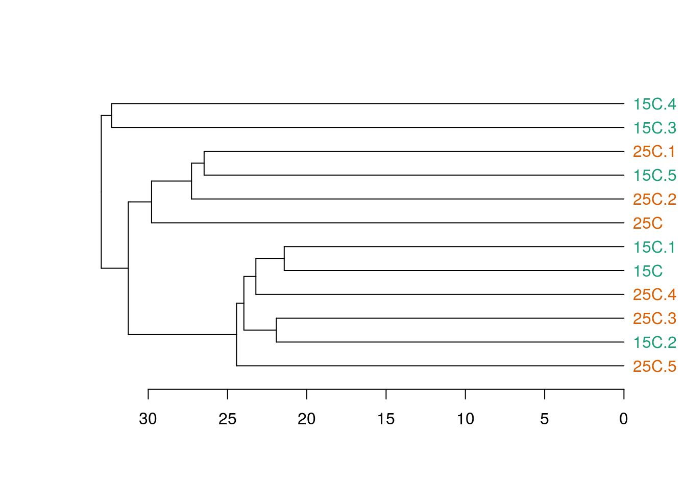

Классификация пептидов
Марина Варфоломеева
Методы построения деревьев
Существует много методов классификации. Их можно разделить на две основные группы (хотя есть много других вариантов)
Методы класстеризации на основании расстояний:
- Метод ближайшего соседа
- Метод отдаленного соседа
- Метод среднегруппового расстояния
- Метод Варда
- и т.д. и т.п.
__ Методы кластеризации на основании признаков:__
- Метод максимальной бережливости
- Метод максимального правдоподобия
В этом курсе мы будем затрагивать только методы иерархической класстеризации на основании расстояний.
Классификация данных проходит в несколько этапов. Рзультат кластеризации будет сильнее всего зависеть (1) от выбора коэффициента сходства-различия и (2) от алгоритма кластеризации. Нет формальных способов выбрать наиболее подходящий коэффициент и алгоритм.
Коэффициенты сходства-различия
Евклидово расстояние
Коэффициент Жаккара
Расстояние на основе коэффициента корреляции
Алгоритмы иерархической класстеризации на основании расстояний
Мы рассмотрим несколько алгоритмов, которые строят иерархическую кластеризацию объектов на основании матрицы расстояний / сходств между ними:
- Метод ближайшего соседа
- Метод отдаленного соседа
- Метод среднегруппового расстояния
- Метод Варда

Метод ближайшего соседа (= nearest neighbour = single linkage)
- к кластеру присоединяется ближайший к нему кластер/объект
- кластеры объединяются в один на расстоянии, которое равно расстоянию между ближайшими объектами этих кластеров

Особенности:
- Может быть сложно интерпретировать, если нужны группы
- объекты на дендрограмме часто не образуют четко разделенных групп
- часто получаются цепочки кластеров (объекты присоединяются как бы по-одному)
- Хорош для выявления градиентов
Работа метода ближайшего соседа

Метод отдаленного соседа (= furthest neighbour = complete linkage)

- к кластеру присоединяется отдаленный кластер/объект
- кластеры объединяются в один на расстоянии, которое равно расстоянию между самыми отдаленными объектами этих кластеров (следствие - чем более крупная группа, тем сложнее к ней присоединиться)
Особенности:
- На дендрограмме образуется много отдельных некрупных групп
- Хорош для поиска дискретных групп в данных
Как работает метод отдаленного соседа


Метод невзвешенного попарного среднего (= UPGMA = Unweighted Pair Group Method with Arithmetic mean)
- кластеры объединяются в один на расстоянии, которое равно среднему значению всех возможных расстояний между объектами из разных кластеров.

Особенности:
- UPGMA и WUPGMС иногда могут приводить к инверсиям на дендрограммах

из Borcard et al., 2011
Как работает метод среднегруппового расстояния


Метод Варда (= Ward’s Minimum Variance Clustering)

- объекты объединяются в кластеры так, чтобы внутригрупповая дисперсия расстояний была минимальной
Особенности:
- метод годится и для неевклидовых расстояний несмотря на то, что внутригрупповая дисперсия расстояний рассчитывается так, как будто это евклидовы расстояния
Кластерный анализ в R
Пример: Ирисы
data("iris")Давайте познакомимся с данными.
dim(iris)## [1] 150 5colnames(iris)## [1] "Sepal.Length" "Sepal.Width" "Petal.Length" "Petal.Width"
## [5] "Species"head(rownames(iris))## [1] "1" "2" "3" "4" "5" "6"Делаем осмысленные имена строк
Species <- substr(iris$Species, 0, 2)
rownames(iris) <- make.unique(Species)Делаем случайную выборку для этой демонстрации
set.seed(191231)
ids <- sample(nrow(iris), 50)
siris <- iris[ids, ]Давайте построим деревья при помощи нескольких алгоритмов кластеризации (по стандартизованным данным, с использованием Евклидова расстояния) и сравним их. Нам понадобится матрица расстояний.
d <- dist(x = siris[, -5], method = "euclidean")Метод ближайшего соседа в R
hc_single <- hclust(d, method = "single")Визуализируем при помощи базовой графики
plot(hc_single)
Визуализируем средствами пакета ape (Paradis et al. 2004).
library(ape)
ph_single <- as.phylo(hc_single)
plot(ph_single, type = "phylogram", cex = 0.7)
axisPhylo()
Визуализируем средствами dendextend (Galili 2015).
library(dendextend)
den_single <- as.dendrogram(hc_single)
plot(den_single)
Метод отдаленного соседа в R
hc_compl <- hclust(d, method = "complete")
ph_compl <- as.phylo(hc_compl)
plot(ph_compl, type = "phylogram", cex = 0.7)
axisPhylo()Визуализируем дерево, полученное методом отдаленного соседа, средствами dendextend
den_compl <- as.dendrogram(hc_compl)
plot(den_compl)
Метод невзвешенного попарного среднего в R
hc_avg <- hclust(d, method = "average")
ph_avg <- as.phylo(hc_avg)
plot(ph_avg, type = "phylogram", cex = 0.7)
axisPhylo()
Визуализируем дерево, полученное методом невзвешенного попарного среднего, средствами dendextend
den_avg <- as.dendrogram(hc_avg)
plot(den_avg)Метод Варда в R
hc_w2 <-hclust(d, method = "ward.D2")
ph_w2 <- as.phylo(hc_w2)
plot(ph_w2, type = "phylogram", cex = 0.7)
axisPhylo()
Визуализируем дерево, полученное методом Варда, средствами dendextend
den_w2 <- as.dendrogram(hc_w2)
plot(den_w2)
Оценка качества кластеризации
Кофенетическая корреляция
Кофенетическое расстояние - расстояние между объектами на дендрограмме
Кофенетическую корреляцию можно рассчитать как пирсоновскую корреляцию (обычную) между матрицами исходных и кофенетических расстояний между всеми парами объектов
Метод, который дает наибольшую кофенетическую корреляцию дает кластеры лучше всего отражающие исходные данные
Можно рассчитать при помощи функции из пакета ape
Кофенетическая корреляция в R
c_single <- cophenetic(ph_single)
c_compl <- cophenetic(ph_compl)
c_avg <- cophenetic(ph_avg)
c_w2 <- cophenetic(ph_w2)
cor(d, as.dist(c_single))## [1] 0.8423048cor(d, as.dist(c_compl))## [1] 0.7083755cor(d, as.dist(c_avg))## [1] 0.866091cor(d, as.dist(c_w2))## [1] 0.8647086Задание:
Оцените при помощи кофенетической корреляции качество кластеризаций, полученных разными методами.
Какой метод дает лучший результат?
Качество и количество кластеров
На каком уровне нужно делить дендрограмму на кластеры?
- Можно субъективно, на любом выбранном уровне. Главное, чтобы кластеры были осмысленными и интерпретируемыми.
- Можно выбрать, глядя на распределение расстояний ветвления
- Можно оценить стабильность кластеризации при помощи бутстрепа и выбрать оптимальное число кластеров.
Стабильность кластеров
На хорошей кластеризации кластеры должны воспроизводиться.
Оптимальное число кластеров можно определить рассчитывая меру нестабильности для каждой из выборок бутстрепа (Fang and Wang (2012))
Много раз берем по 2 выборки бутстрепом, и оцениваем стабильность.
Здесь мы используем всего 300 итераций. Для реальной жизни нужно 1000 и больше.
library(fpc)nsel <- nselectboot(d, B = 300, clustermethod = hclustCBI, seed = 9646, method = "complete", krange=3:11)Оптимальное число кластеров — с минимальным значением нестабильности
nsel$kopt # оптимальное число кластеров## [1] 11nsel$stabk # средние значения нестабильности## [1] NA NA 0.09465067 0.05690133 0.04863467 0.03908800
## [7] 0.03757067 0.03957067 0.03876267 0.03760533 0.03595733Чтобы легче было выбирать, и чтобы понять, что происходит, изобразим значения нестабильности на графике
plot(1:11, nsel$stabk)
# nsel$stab # матрица с результатами бутстрепаШирина силуэта
Ширина силуэта — мера степени принадлежности объекта к кластеру. Это среднее расстояние от данного объекта до других объектов из того же кластера, в сравнении с аналогичной величиной для ближайшего кластера.
Чем больше, тем лучше
Оценим ширину силуэта для 3 или 6 кластеров
complete3 <- cutree(hclust(d), 3)
qual3<- cluster.stats(d, complete3)
qual3$clus.avg.silwidths## 1 2 3
## 0.5968066 0.4067442 0.7830519complete6 <- cutree(hclust(d), 6)
qual6<- cluster.stats(d, complete6)
qual6$clus.avg.silwidths## 1 2 3 4 5 6
## 0.5571272 0.3156247 0.3700587 0.2276923 0.7383517 0.4044389mean(qual3$clus.avg.silwidths); mean(qual6$clus.avg.silwidths)## [1] 0.5955342## [1] 0.4355489Бутстреп поддержка ветвей
“An approximately unbiased test of phylogenetic tree selection” (Shimodaria, 2002)
Этот тест использует специальный вариант бутстрепа — multiscale bootstrap. Мы не просто многократно берем бутстреп-выборки и оцениваем для них вероятность получения топологий (BP p-value), эти выборки еще и будут с разным числом объектов. По изменению BP при разных объемах выборки можно вычислить AU (approximately unbiased p-value).
library(pvclust)# итераций должно быть 1000 и больше, здесь мало для скорости
set.seed(42)
cl_boot <- pvclust(t(siris[, -5]), method.hclust = "average", nboot = 100, method.dist = "euclidean")## Bootstrap (r = 0.5)... Done.
## Bootstrap (r = 0.5)... Done.
## Bootstrap (r = 0.5)... Done.
## Bootstrap (r = 0.75)... Done.
## Bootstrap (r = 0.75)... Done.
## Bootstrap (r = 1.0)... Done.
## Bootstrap (r = 1.0)... Done.
## Bootstrap (r = 1.0)... Done.
## Bootstrap (r = 1.25)... Done.
## Bootstrap (r = 1.25)... Done.## Warning in a$p[] <- c(1, bp[r == 1]): number of items to replace is not a
## multiple of replacement lengthДерево с величинами поддержки
AU — approximately unbiased p-values (красный), BP — bootstrap p-values (зеленый)
plot(cl_boot)
# pvrect(cl_boot) # достоверные ветвленияДля диагностики качества оценок AU нам понадобится график стандартных ошибок для AU p-value. Он нужен, чтобы оценить точность оценки самих AU. Чем больше было бутстреп-итераций, тем точнее будет оценка.
seplot(cl_boot, cex = 0.5)# print(cl_boot) # все значенияСопоставление деревьев: Танглграммы
Танглграмма
Два дерева (с непохожим ветвлением) выравнивают, вращая случайным образом ветви вокруг оснований. Итеративный алгоритм. Картина каждый раз разная.
set.seed(395)
untang_w <- untangle_step_rotate_2side(den_compl, den_w2, print_times = F)
# танглграмма
tanglegram(untang_w[[1]], untang_w[[2]],
highlight_distinct_edges = FALSE,
common_subtrees_color_lines = F,
main = "Tanglegram",
main_left = "Left tree",
main_right = "Right tree",
columns_width = c(8, 1, 8),
margin_top = 3.2, margin_bottom = 2.5,
margin_inner = 4, margin_outer = 0.5,
lwd = 1.2, edge.lwd = 1.2,
lab.cex = 1, cex_main = 1)
Задание
Постройте танглграмму из дендрограмм, полученных методом ближайшего соседа и методом Варда.
Тепловые карты экспрессии.
library(gplots) # для тепловых картПалитры для тепловых карт
# library(RColorBrewer)
pal_green <- colorpanel(75, low = "black", mid = "darkgreen", high = "yellow")
# library(spatstat) # to convert palette to grayscale
# pal_gray <- to.grey(pal_green, weights=c(1,1,1))dat <- as.matrix(siris[, -5])
heatmap.2(dat, col=pal_green, scale = "none", key=TRUE, symkey=FALSE, density.info="none", trace="none", cexRow=1, cexCol = 1, keysize = 1, margins = c(8, 5))
heatmap.2(dat, col=pal_green, scale = "none", key=TRUE, symkey=FALSE, density.info="none", trace="none", cexRow=1, cexCol = 1, keysize = 1, margins = c(8, 5), key.par = list(mgp = c(1.5, 0.9, 0), mar = c(3, 1, 3, 0.1), cex = 1), key.title = NA, key.xlab = NA)
Еще один вариант
library(NMF)## Loading required package: pkgmaker## Loading required package: registry##
## Attaching package: 'pkgmaker'## The following object is masked from 'package:base':
##
## isNamespaceLoaded## Loading required package: rngtools## Loading required package: cluster## NMF - BioConductor layer [OK] | Shared memory capabilities [NO: bigmemory] | Cores 3/4## To enable shared memory capabilities, try: install.extras('
## NMF
## ')##
## Attaching package: 'NMF'## The following object is masked from 'package:ape':
##
## consensusaheatmap(dat, color = "-RdBu:256", annRow = siris[, 5])
Ссылки
Galili, T. 2015. Dendextend: An r package for visualizing, adjusting, and comparing trees of hierarchical clustering. Bioinformatics.
Paradis, E., J. Claude, and K. Strimmer. 2004. APE: Analyses of phylogenetics and evolution in R language. Bioinformatics 20:289–290.